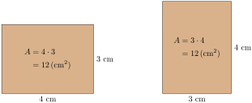
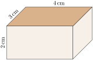

Section 1.7 Algebraic Properties and Simplifying Expressions
If we have two apples and then add three more, we have five apples. That result is the same as if we’d started with three apples and then added two more. This is a feature of numbers and arithmetic that we will formalize in this section, along with a few other features. Understanding these well will help us solve more equations later.
Subsection 1.7.1 Identities and Inverses
We start with some definitions. The number \(0\) is called the additive identity. It has this name because adding \(0\) to a number does not change that number’s “identity”. If you were playing a “game” where you needed to add somethng to \(x\text{,}\) but you didn’t want to change the value, then you would add \(0\text{:}\)
\begin{equation*}
x+0=x
\end{equation*}
Adding the additive identity to a number does not change that number.
If the sum of two numbers is the additive identity (\(0\)) then those two numbers are called additive inverses of each other. Imagine playing a game where you have a number like \(2\text{,}\) and you need to add something to it to get \(0\text{.}\) You would add \(-2\text{:}\)
\begin{equation*}
2+(-2)=0
\end{equation*}
It works the other way too when starting with a negative number. Now imagine starting with \(-3\) and you need to add something to that to get \(0\text{.}\) You would add \(3\text{:}\)
\begin{equation*}
-3+3=0
\end{equation*}
The additive inverse of a number is that same number with with the opposite sign. And what makes that pair of numbers special is that they add to \(0\text{.}\)
We also have the special number \(1\text{,}\) which is the multiplicative identity. The special feature being highlighted is that when you multiply a number by \(1\text{,}\) it does not change that number’s “identity”. Once again, imagine you are playing a game where your job is to multiply \(x\) by something, but you actually do not want to change the number’s value. Then you would multiply by \(1\text{:}\)
\begin{equation*}
x\cdot1=x
\end{equation*}
If the product of two numbers is the multiplicative identity (\(1\)) then those two numbers are called multiplicative inverses of each other. Strategically, what would you multiply \(2\) by to get \(1\text{?}\) You could use the fraction \(\frac12\text{:}\)
\begin{equation*}
2\cdot\frac12=1
\end{equation*}
Or what if you started with a more “complicated” number like \(-\frac{2}{3}\text{?}\) What could you multiply that by to get \(1\text{?}\) We would use \(-\frac{3}{2}\) so that the negative signs cancel, and the product would be \(\frac{6}{6}\) which reduces to \(1\text{:}\)
\begin{equation*}
-\frac{2}{3}\cdot\left(-\frac{3}{2}\right)=1
\end{equation*}
Notice what happens with the numerator and denomintor swapping places. The multiplicative inverse of a number is also called its reciprocal.
Checkpoint 1.7.2. Matching Vocabulary.
Checkpoint 1.7.3. Matching Identities and Inverses.
Subsection 1.7.2 Algebraic Properties
Commutative Property.
To find the area of a rectangle, multiply the length by the width. Does the result change if we multiply the width by the length?

We can see that \(3\cdot2=2\cdot3\text{.}\) If we write the length of a rectangle as \(\ell\) and the width as \(w\text{,}\) we can write \(\ell w=w\ell\text{.}\) The fact that we can reverse the order of multiplication is known as the commutative property of multiplication. There is a similar property for addition, which you can see in the equation \(1+2=2+1\text{.}\) It’s called the commutative property of addition. However, subtraction and division do not have the commutative property, because for example \(2-1\ne1-2\) and \(\frac{4}{2}\ne\frac{2}{4}\text{.}\)
Associative Property.
Instead of a rectangle, consider a 3D rectangular prism with depth \(d=3\,\text{cm}\text{,}\) width \(w=4\,\text{cm}\text{,}\) and height \(h=2\,\text{cm}\text{.}\) To compute the volume of this prism, we multiply the depth, width, and height together. In the following figure, on the left side, we multiply the width and depth first, and then multiply the height. On the right side, we multiply the width and height first, and then multiply the depth. Either way, the final result is the same.


What this shows us is \((dw)h=d(wh)\text{.}\) We haven’t changed the order that the three variables are written left to right, but we are doing the actual mulltiplication in a different order. The order of operations requires multiplication inside the parentheses to happen first. This feature of numbers is known as the associative property of multiplication. There is a similar property for addition, which you can see in the equation \((1+2)+3=1+(2+3)\text{.}\) Note again that the left-to-right order that the numbers are written is the same on either side. But the grouping symbols get us to actually do the addition in a different order. This property is called the associative property of addition. Subtraction and division do not have an associative property, because for example \((3-2)-1\ne3-(2-1)\) and \((2\div2)\div2\neq2\div(2\div2)\text{.}\)
Distributive Property.
The final property we’ll explore is called the distributive property, which involves both multiplication and addition (or subtraction). To understand this property, consider what happens if we take \(3\) bags, and each bag contains one apple and one pear. We have the same total amount of fruit as if we’d taken a bag with \(3\) apples and another bag with \(3\) pears. Algebraically:
\begin{align*}
\text{3 bags, each with 1 apple and 1 pear}\amp=(\text{bag with 3 apples})+(\text{bag with three pears})\\
3(a+p)\amp=3a+3p\text{.}
\end{align*}
It helps to think of this as “distributing” the \(3\) to the \(a\) and the \(p\text{.}\)
The distributive property also works with multiplication on the ohter side, and with subtraction:
\begin{equation*}
(a+p)\cdot3 =a\cdot3+p\cdot3\qquad 3(a-p)=3a-3p\qquad (a-p)\cdot3 =a\cdot3-p\cdot3
\end{equation*}
although the apples and pears metaphor may be harder to make sense of.
And the distributive property works with division too, when there is only one term in the denominator:
\begin{equation*}
\frac{a+p}{3}=\frac{a}{3}+\frac{p}{3}
\end{equation*}
Summary of Algebraic Properties.
Let \(a\text{,}\) \(b\text{,}\) and \(c\) be real numbers, variables, or algebraic expressions. Then the following properties hold:
- Commutative Property of Multiplication
- \(\displaystyle a\cdot b=b\cdot a\)
- Associative Property of Multiplication
- \(\displaystyle a\cdot(b\cdot c)=(a\cdot b)\cdot c\)
- Commutative Property of Addition
- \(\displaystyle a+b=b+a\)
- Associative Property of Addition
- \(\displaystyle a+(b+c)=(a+b)+c\)
- Distributive Property
- \(\begin{aligned} a(b+c) \amp=ab+ac\amp\qquad a(b-c) \amp= ab-ac\\ (b+c)a \amp=ba+ca\amp\qquad (b-c)a \amp=ba-ca\\ \frac{b+c}{a} \amp=\frac{b}{a}+\frac{c}{a}\amp\qquad\frac{b-c}{a} \amp=\frac{b}{a}-\frac{c}{a}\\ \end{aligned}\) (The last two versions require \(a\neq0\text{.}\))
Practice these properties in the following exercises.
Checkpoint 1.7.8. Matching Vocabulary.
Checkpoint 1.7.9. Matching Properties to Examples.
Checkpoint 1.7.10.
(a)
Use the commutative property of multiplication to write an equivalent expression to \({53m}\text{.}\)
Explanation.
To use the commutative property of multiplication, change the order the two factors are multiplied:
\begin{equation*}
53m=m\cdot 53
\text{.}
\end{equation*}
(b)
Use the associative property of multiplication to write an equivalent expression to \({3\mathopen{}\left(5n\right)}\text{.}\)
Explanation.
To use the associative property of multiplication, leave factors written in their original order, but change the grouping symbols so that a different multiplication has higher priority:
\begin{equation*}
3(5n)=(3\cdot5)n
\text{.}
\end{equation*}
You may further simplify by multiplying the two numbers:
\begin{equation*}
\begin{aligned}
3(5n)\amp=(3\cdot5)n\\
\amp=15n
\end{aligned}
\end{equation*}
but that is going a step beyond simply using thee associative property.
(c)
Use the commutative property of addition to write an equivalent expression to \({q+84}\text{.}\)
Explanation.
To use the commutative property of addition, change the order the two terms are added:
\begin{equation*}
q+84=84+q
\text{.}
\end{equation*}
(d)
Use the associative property of addition to write an equivalent expression to \({x+\left(20+c\right)}\text{.}\)
Explanation.
To use the associative property of addition, leave terms written in their original order, but change the grouping symbols so that a different addition has higher priority:
\begin{equation*}
x+(20+c)=(x+20)+c
\end{equation*}
(e)
Use the distributive property to write an equivalent expression to \({3\mathopen{}\left(r+7\right)}\) that has no grouping symbols.
Explanation.
To use the distributive property, multiply the number outside the parentheses, \(3\text{,}\) with each term inside the parentheses:
\begin{equation*}
\begin{aligned}
3(r+7)\amp=3\cdot r+3\cdot7\\
\amp=3r+21\text{.}
\end{aligned}
\end{equation*}
Subsection 1.7.3 Applying the Commutative, Associative, and Distributive Properties
Like Terms.
One way we use the commutative, associative, and distributive properties is to simplify algebra expressions. For example, how we treat like terms (see Section 2) is actually putting these algebra properties into practice. We combine like terms when we take an expression like \(2a+3a\) and write the result as \(5a\text{.}\) The drawn-out formal process actually looks like this:
\begin{align*}
2a+3a \amp= (2+3)a \amp\amp\text{distributive property}\\
\amp=5a\amp\amp\text{do the addition}
\end{align*}
So combining like terms is actually making use of the distributive property. In practice, it’s better for you to do this the fast way. But you can grow you understanding and appreciation for algebra if you see how the above steps break thigns down with one offical algebra property at a time.
Checkpoint 1.7.11.
Where possible, simplify the following expressions by combining like terms.
(a)
\(6c+12c-5c\)
Explanation.
All three terms are like terms, so they may combined. We combine them two at a time:
\begin{equation*}
\begin{aligned}
6c+12c-5c \amp=(6c+12c)-5c\\
\amp=(6+12)c-5c\\
\amp=18c-5c\\
\amp=(18-5)c=13c
\end{aligned}
\end{equation*}
(b)
\(-5q^2-3q^2\)
Explanation.
The terms \(-5q^2\) and \(-3q^2\) are like terms, so we may combine them. Note we are using one of the subtraction versions of the distributive property.
\begin{equation*}
\begin{aligned}
-5q^2-3q^2 \amp=(-5-3)q^2\\
\amp=-8q^2
\end{aligned}
\end{equation*}
(c)
\(x-5y+4x\)
Explanation.
The terms \(x\) and \(4x\) are like terms, while the other term is different. Using the associative and commutative properties of addition early in the process allows us to place the two like terms next to each other, and then combine them:
\begin{equation*}
\begin{aligned}
x-5y+4x \amp=x+(-5y)+4x\\
\amp=x+((-5y)+4x)\\
\amp=x+(4x+(-5y))\\
\amp=(x+4x)+(-5y)\\
\amp=(1+4)x+(-5y)\\
\amp=5x+(-5y)=5x-5y
\end{aligned}
\end{equation*}
This walkthrough uses the algebra properties cleanly and clearly one step at a time, but if you are combining like terms more quickly, there’s nothing at all wrong with that.
(d)
\(2x-3y+4z\)
Explanation.
The expression \(2x-3y+4z\) cannot be simplified as there are no like terms.
Adding Expressions.
Consider adding an expression like \(4x+5\) to an expression like \(3x+7\text{:}\)
\begin{equation*}
(4x+5)+(3x+7)
\end{equation*}
Can we simplify this? It’s great if you already see that the parentheses in this case can be removed and it would not change the outcome:
\begin{equation*}
4x+5+3x+7
\end{equation*}
Aand then using what you know about like terms, you could conclude that this is \(7x+12\text{.}\)
Several steps that are described above are sweeping things under the rug, taking multiple steps at once without really justifying why that is legal. Why exactly is it OK to just ignore those parehteses? Why is it ok to add \(4x\) and \(3x\) when they are separated with the \(5\) in between? With the algebra properties, we can cleanly justify why \((4x+5)+(3x+7)\) simplifies to \(7x+12\text{,}\) explaining one step at a time.
\begin{align*}
\amp\highlight{(4x+5)}+\Big(\highlight{3x}+\highlight{7}\Big)\\
\end{align*}
View this as three things being added, and apply associativity of addition.
\begin{align*} \amp=\Big((4x+5)+3x\Big)+7\\ \amp=(\highlight{(}4x+5\highlight{)}+3x)+7\\ \end{align*}Once again apply associativity of addition. We won’t change the order anything is written, but we will move that inner pair of parentheses.
\begin{align*} \amp=(4x+(5+3x))+7\\ \amp=(4x+(\highlight{5}+\highlight{3x}))+7\\ \end{align*}Now apply commutativity of addition.
\begin{align*} \amp=(4x+(3x+5))+7\\ \end{align*}We’ve made noteworth progress because the \(x\)-terms are finally written close to each other.
\begin{align*} \amp=(4x+\highlight{(}3x+5\highlight{)})+7\\ \end{align*}Apply associativity of addition to the inner parentheses.
\begin{align*} \amp=((4x+3x)+5)+7\\ \amp=(\highlight{(4x+3x)}+\highlight{5})+\highlight{7}\\ \end{align*}Apply associativity of addition again.
\begin{align*} \amp=(4x+3x)+(5+7)\\ \amp=\highlight{(4x+3x)}+(5+7)\\ \end{align*}Usse the distributive property.
\begin{align*} \amp=(4+3)x+(5+7)\\ \end{align*}And finally, we can just respect the order of operations and carry out the additons inside the parentheses.
\begin{align*} \amp=7x+12 \end{align*}That wass a lot to do! So it’s worth repeating that it is good if you can more quickly simplify \((4x+5)+(3x+7)\) to \(7x+12\text{.}\) The above demonstrates how the algebra properties, one at a time, truly justify and validate that simplification.
Checkpoint 1.7.12.
Use the associative, commutative, and distributive properties to simplify the following expressions as much as possible.
(a)
\((2x+3)+(4x+5)\)
Explanation.
\begin{equation*}
\begin{aligned}
\amp(2x+3)+(4x+5)\\
\amp=((2x+3)+4x)+5\amp\amp\text{using the associative property of addition}\\
\amp=(2x+(3+4x))+5\amp\amp\text{using the associative property of addition}\\
\amp=(2x+(4x+3))+5\amp\amp\text{using the commutative property of addition}\\
\amp=((2x+4x)+3)+5\amp\amp\text{using the associative property of addition}\\
\amp=(2x+4x)+(3+5)\amp\amp\text{using the associative property of addition}\\
\amp=(2+4)x+(3+5)\amp\amp\text{using the distributive property}\\
\amp=6x+8\amp\amp\text{using addition}
\end{aligned}
\end{equation*}
(b)
\((-5x+3)+(4x-7)\)
Explanation.
\begin{equation*}
\begin{aligned}
\amp(-5x+3)+(4x-7)\\
\amp=((-5x+3)+4x)+(-7)\amp\amp\text{using the associative property of addition}\\
\amp=(-5x+(3+4x))+(-7)\amp\amp\text{using the associative property of addition}\\
\amp=(-5x+(4x+3))+(-7)\amp\amp\text{using the commutative property of addition}\\
\amp=((-5x+4x)+3)+(-7)\amp\amp\text{using the associative property of addition}\\
\amp=(-5x+4x)+(3+(-7))\amp\amp\text{using the associative property of addition}\\
\amp=(-5+4)x+(3+(-7))\amp\amp\text{using the distributive property}\\
\amp=-1x+(-4)\amp\amp\text{using addition}\\
\amp=-x-4
\end{aligned}
\end{equation*}
Subsection 1.7.4 The Role of the Order of Operations
When simplifying an expression such as \(3+4(5x+7)\text{,}\) we need to respect the order of operations. Since the terms inside the parentheses are not like terms, there is nothing to simplify inside the parentheses. The next highest priority operation is multiplying the \(4\) by the \((5x+7)\text{.}\) This must be done before anything happens with that \(3\) at the far left. It is wrong to write \(3+4(5x+7)=\highlight{7}(5x+7)\text{,}\) because that would mean we treated the addition as having higher priority than the multiplication. And that just plain violates the standard order of operations.
So the order of operations alone is not enough to simplify this expression. But the algebra properties let us rearrange things so that we can be productive. To simplify \(3+4(5x+7)\text{,}\) note that there is a place where we can apply the distributive property:
\begin{align*}
3+4(5x+7)\amp=3+\Big(4(5x)+4(7)\Big)\\
\amp=3+(20x+28)\\
\end{align*}
Now we can uses the commutative and associative properties.
\begin{align*} \amp=3+(28+20x)\\ \amp=(3+28)+20x\\ \amp=31+20x \end{align*}Checkpoint 1.7.13. Algebra Steps to Simplify an Expression.
Put the steps to simplify \(5+9(2-3x)\) in the correct order. Use only one algebra property or arithmetic operation in each step. It’s possible you should not use all of the steps provided here as options.
Checkpoint 1.7.14.
Simplify the expressions using the commutative, associative, and distributive properties.
(a)
\(4-(3x-9)\)
Explanation.
That first subtraction may be tricky. It may help to write that as addition of \(-1\) times the rest:
\begin{equation*}
\begin{aligned}
4-(3x-9) \amp=4+(-1)(3x-9)\\
\amp=4+\Big(-1(3x)-(-1)(9)\Big)\\
\amp=4+(-3x+9)\\
\amp=4+(9-3x)\\
\amp=4+(9+(-3x))\\
\amp=(4+9)+(-3x)\\
\amp=13+(-3x)=13-3x
\end{aligned}
\end{equation*}
(b)
\(9x+2(-2x+3)\)
Explanation.
We start out with the distributive property and proceed from there:
\begin{equation*}
\begin{aligned}
5x+9(-2x+3)\amp=5x+\Big(9(-2x)+9\cdot3\Big)\\
\amp=5x+(-18x+27)\\
\amp=(5x+(-18x))+27\\
\amp=-13x+27
\end{aligned}
\end{equation*}
(c)
\(5(x-9)+4(x+4)\)
Explanation.
We start out with the distributive property and proceed from there:
\begin{equation*}
\begin{aligned}
\amp5(x-9)+4(x+4)\\
\amp=(5x-45)+(4x+16)\\
\amp=5x+(-45)+4x+16\amp\amp\text{skipping lots of formal algebra properties}\\
\amp=9x-29
\end{aligned}
\end{equation*}
Reading Questions 1.7.5 Reading Questions
1.
Why is the number \(1\) called the “multiplicative identity”?
2.
Consider the expression \(138+25+5\text{.}\) According to the order of operations, you should add this from left to right, and start out by adding \((138+25)+5\text{.}\)
Which property of algebra allows you to view this as equal to \(138+(25+5)\text{?}\) (Adding them that way is probably easier to do in your head.)
3.
Whenever you combine like terms, which algebraic property of numbers are you using?
Exercises 1.7.6 Exercises
Vocabulary
Exercise Group.
Find the indicated inverse.
1.
Find the additive inverse of \(9\)
Answer.
\(-9\)
2.
Find the additive inverse of \(-9\)
Answer.
\(9\)
3.
Find the multiplicative inverse of \(-7\)
Answer.
\(-{\frac{1}{7}}\)
4.
Find the multiplicative inverse of \(-5\)
Answer.
\(-{\frac{1}{5}}\)
5.
Find the additive inverse of \(-2.9\)
Answer.
\(2.9\)
6.
Find the additive inverse of \(-0.3\)
Answer.
\(0.3\)
7.
Find the multiplicative inverse of \({{\frac{7}{2}}}\)
Answer.
\({\frac{2}{7}}\)
8.
Find the multiplicative inverse of \({{\frac{7}{8}}}\)
Answer.
\({\frac{8}{7}}\)
9.
Find the multiplicative inverse of \({-{\frac{3}{2}}}\)
Answer.
\(-{\frac{2}{3}}\)
10.
Find the multiplicative inverse of \({-{\frac{2}{3}}}\)
Answer.
\(-{\frac{3}{2}}\)
11.
What number is the additive identity?
Answer.
\(0\)
12.
What number is the multiplicative identity?
Answer.
\(1\)
Skills Practice
Apply an Algebraic Property.
Demonstrate that you know the meanings of the various algebraic properties by applying the given algebraic property to the given expression to get a new expression.
13.
Apply associativity to \({\left(p+4\right)+n}\text{.}\)
Answer.
\(p+\left(4+n\right)\)
14.
Apply associativity to \({\left(t+46\right)+W}\text{.}\)
Answer.
\(t+\left(46+W\right)\)
15.
Apply associativity to \({{\frac{6}{5}}+\left(z^{2}+z\right)}\text{.}\)
Answer.
\(\left({\frac{6}{5}}+z^{2}\right)+z\)
16.
Apply associativity to \({E+\left({\frac{2}{9}}+E^{2}\right)}\text{.}\)
Answer.
\(\left(E+{\frac{2}{9}}\right)+E^{2}\)
17.
Apply associativity to \({\left(15J\right)T}\text{.}\)
Answer.
\(15\mathopen{}\left(JT\right)\)
18.
Apply associativity to \({\left(4Q\right)A}\text{.}\)
Answer.
\(4\mathopen{}\left(QA\right)\)
19.
Apply commutativity to \({W+i}\text{.}\)
Answer.
\(i+W\)
20.
Apply commutativity to \({c+R}\text{.}\)
Answer.
\(R+c\)
21.
Apply commutativity of addition to \({{\frac{4}{3}}h+z}\text{.}\)
Answer.
\(z+{\frac{4}{3}}h\)
22.
Apply commutativity of addition to \({{\frac{8}{5}}n+g}\text{.}\)
Answer.
\(g+{\frac{8}{5}}n\)
23.
Apply commutativity of multiplication to \({tP+j}\text{.}\)
Answer.
\(Pt+j\)
24.
Apply commutativity of multiplication to \({yw+G}\text{.}\)
Answer.
\(wy+G\)
25.
Apply commutativity of multiplication to \({2\mathopen{}\left(E+3\right)}\text{.}\)
Answer.
\(\left(E+3\right)\cdot 2\)
26.
Apply commutativity of multiplication to \({8\mathopen{}\left(J+5\right)}\text{.}\)
Answer.
\(\left(J+5\right)\cdot 8\)
27.
Apply commutativity of addition to \({5\mathopen{}\left(Q+9\right)}\text{.}\)
Answer.
\(5\mathopen{}\left(9+Q\right)\)
28.
Apply commutativity of addition to \({2\mathopen{}\left(W+5\right)}\text{.}\)
Answer.
\(2\mathopen{}\left(5+W\right)\)
29.
Apply the distributive property to \({8\mathopen{}\left(b+7\right)}\text{.}\)
Answer.
\(8b+8\cdot 7\)
30.
Apply the distributive property to \({5\mathopen{}\left(h+2\right)}\text{.}\)
Answer.
\(5h+5\cdot 2\)
31.
Apply the distributive property to \({2\mathopen{}\left(m-7\right)}\text{.}\)
Answer.
\(2m-2\cdot 7\)
32.
Apply the distributive property to \({8\mathopen{}\left(t-10\right)}\text{.}\)
Answer.
\(8t-8\cdot 10\)
33.
Apply the distributive property to \({\frac{5}{2}\mathopen{}\left(y+\frac{5}{4}\right)}\text{.}\)
Answer.
\(\frac{5}{2}y+\frac{5}{2}\frac{5}{4}\)
34.
Apply the distributive property to \({\frac{10}{7}\mathopen{}\left(E+\frac{8}{9}\right)}\text{.}\)
Answer.
\(\frac{10}{7}E+\frac{10}{7}\frac{8}{9}\)
35.
Apply the distributive property to \({-\left(J+\frac{7}{6}\right)}\text{.}\)
Answer.
\(-J-\left(\frac{7}{6}\right)\)
36.
Apply the distributive property to \({-\left(P+\frac{4}{7}\right)}\text{.}\)
Answer.
\(-P-\left(\frac{4}{7}\right)\)
Simplify.
Simplify the given expression. Ideally, you are thinking about how the properties of algebra are helping you simplify.
37.
\({19x+18x}\)
Answer.
\(37x\)
38.
\({2x+13x}\)
Answer.
\(15x\)
39.
\({\frac{3}{4}x-\frac{3}{8}x}\)
Answer.
\(\frac{3}{8}x\)
40.
\({\frac{4}{3}x-\frac{9}{2}x}\)
Answer.
\(\frac{-19}{6}x\)
41.
\({12+13t+15}\)
Answer.
\(13t+27\)
42.
\({5+9y+4}\)
Answer.
\(9y+9\)
43.
\({18D+3+11D}\)
Answer.
\(29D+3\)
44.
\({11J+16+20J}\)
Answer.
\(31J+16\)
45.
\({3\mathopen{}\left(5P+7\right)-6}\)
Answer.
\(15P+15\)
46.
\({8\mathopen{}\left(7W+3\right)-5}\)
Answer.
\(56W+19\)
47.
\({6+5\mathopen{}\left(3b-9\right)}\)
Answer.
\(15b+\left(-39\right)\)
48.
\({5+2\mathopen{}\left(7h-8\right)}\)
Answer.
\(14h+\left(-11\right)\)
49.
\({8\mathopen{}\left(2m+5\right)+6\mathopen{}\left(7m+9\right)}\)
Answer.
\(58m+94\)
50.
\({5\mathopen{}\left(6s+2\right)+7\mathopen{}\left(3s+4\right)}\)
Answer.
\(51s+38\)
51.
\({2\mathopen{}\left(9y+8\right)-5\mathopen{}\left(4y-3\right)}\)
Answer.
\(-2y+31\)
52.
\({7\mathopen{}\left(4D+6\right)-5\mathopen{}\left(9D-2\right)}\)
Answer.
\(-17D+52\)
53.
\({3\mathopen{}\left(8J+9\right)-2\mathopen{}\left(4J+6\right)}\)
Answer.
\(16J+15\)
54.
\({2\mathopen{}\left(3P+4\right)-7\mathopen{}\left(9P+6\right)}\)
Answer.
\(-57P+\left(-34\right)\)
55.
\({7\mathopen{}\left(5W+8\right)-\left(4W+3\right)}\)
Answer.
\(31W+53\)
56.
\({4\mathopen{}\left(9b+5\right)-\left(6b+8\right)}\)
Answer.
\(30b+12\)
57.
\({\frac{3}{5}\mathopen{}\left(3t-5\right)+6\mathopen{}\left(8t-\frac{10}{7}\right)}\)
Answer.
\(\frac{249}{5}t+\frac{-81}{7}\)
58.
\({\frac{4}{5}\mathopen{}\left(9N-4\right)+8\mathopen{}\left(6N-\frac{7}{6}\right)}\)
Answer.
\(\frac{276}{5}N+\frac{-188}{15}\)
59.
\({2.6\mathopen{}\left(1.7s-7.7\right)-4.8\mathopen{}\left(5.1s-9.9\right)}\)
Answer.
\(-20.06s+27.5\)
60.
\({9.1\mathopen{}\left(5.9y-2.2\right)-3.5\mathopen{}\left(8.9y-7.8\right)}\)
Answer.
\(22.54y+7.28\)
Critical Thinking
61.
The expression \({D+E+c}\) would be ambiguous if we did not have a left-to-right reading convention.
(a)
Use grouping symbols to emphasize the order that these additions should be carried out.
Answer.
\(\left(D+E\right)+c\)
(b)
Use the associative property of addition to write an equivalent (but different) algebraic expression.
Answer.
\(D+\left(E+c\right)\)
62.
The expression \({xyz}\) would be ambiguous if we did not have a left-to-right reading convention.
(a)
Use grouping symbols to emphasize the order that these multiplications should be carried out.
Answer.
\(\left(xy\right)z\)
(b)
Use the associative property of multiplication to write an equivalent (but different) algebraic expression.
Answer.
\(x\mathopen{}\left(yz\right)\)
63. Challenge.
Think of a number. Add four to your number. Now double that. Then add six. Then halve it. Finally, subtract \(7\text{.}\) What is the result? Do you always get the same result, regardless of what number you start with? How does this work? Explain using algebra.
Explanation.
Let’s start with the number \(x\) and follow the instructions: \(x\)
Add four to the number: \(x + 4\)
Now double that: \(2(x+4)\)
Then add six: \(2(x+4)+6\)
Then halve it: \(\frac{2(x + 4)+ 6}{2}\)
Finally, subtract 7: \(\frac{2(x + 4)+ 6}{2}-7\)
This expression can be simplified:
\begin{equation*}
\begin{aligned}
\frac{2(x + 4)+ 6}{2}-7 \amp = \frac{2x+8+6}{2} - 7\\
\amp = \frac{2x+14}{2}-7\\
\amp = x + 7 - 7\\
\amp = x
\end{aligned}
\end{equation*}
Thus, after following the instructions, you always end up with the original number.